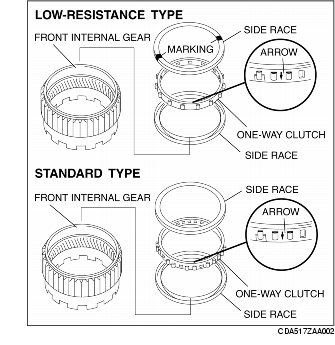

Front internal gear one-way clutch component disassembly/assembly
1. Perform the preinspection before disassembly.
(See Front Internal Gear and One-Way Clutch Component.)
2. Disassemble in the order indicated in the table.
3. Assemble in the reverse order of disassembly.

One-Way Clutch Retainer Disassembly Note
• Remove the one-way clutch retainer using a flathead screwdriver, etc. as shown in the figure.

Assembly Procedure
1. Install the snap ring.
2. Install the one-way clutch to the front internal gear in the direction of the arrow (on the one-way clutch) as shown in the figure.

3. Install the side race.
4. Install the one-way clutch retainer.